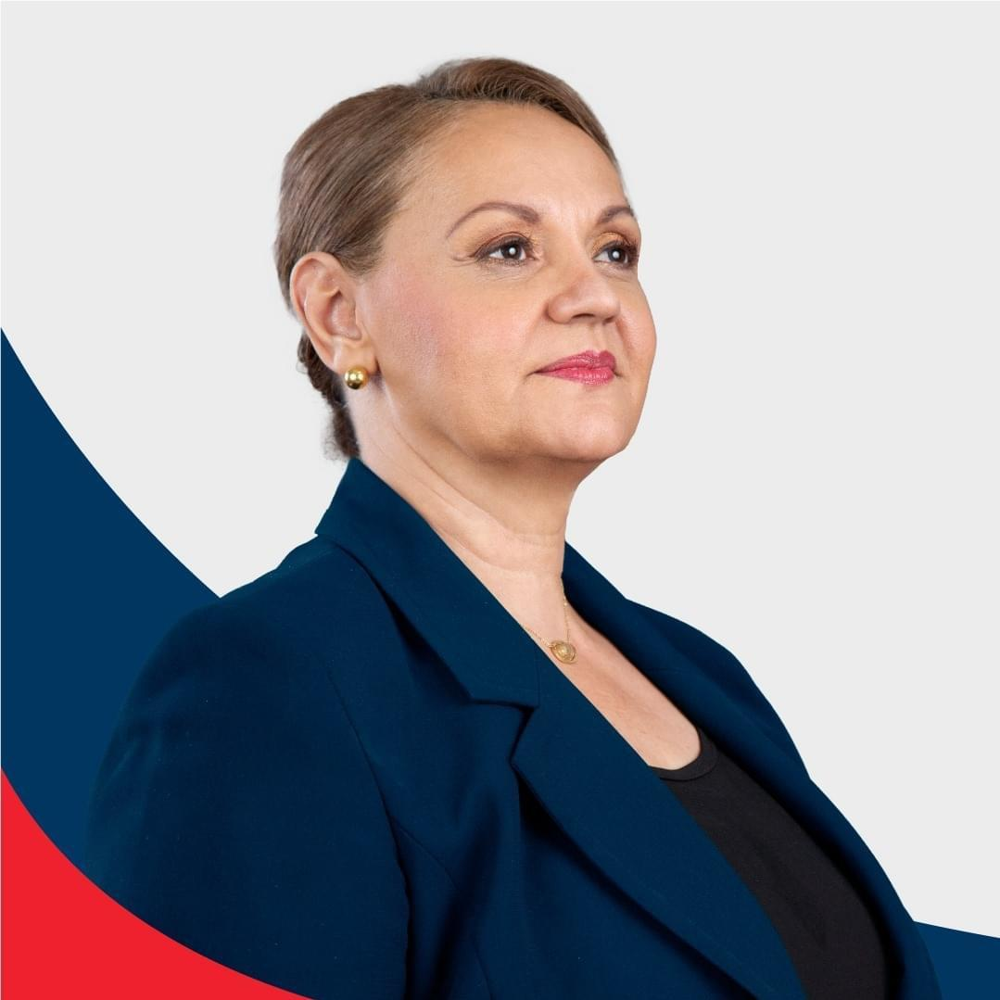
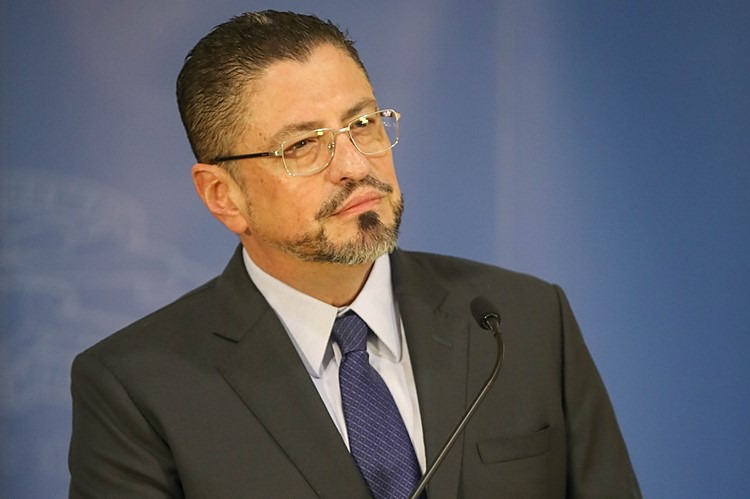

Elecciones Presidenciales 2022 Costa Rica
Informar a la poblaciones sobre los datos relevantes de los primeros 4 candidatos a la presidencia

|
 |
|  | 
|
| Partido | Candidato | Encuesta U Latina | Encuesta U Nacional |
|---|---|---|---|
 |
José María Figueres Olsen | 20.2% | 14.9% |
| Lineth Saborío Chaverri | 16.5% | 13.3 | |
 |
Rodrigo Chaves Robles | 11.4% | 3.3 |
| Fabricio Alvarado Muñoz | 10.8% | 11.1 |